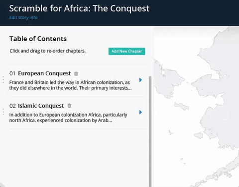
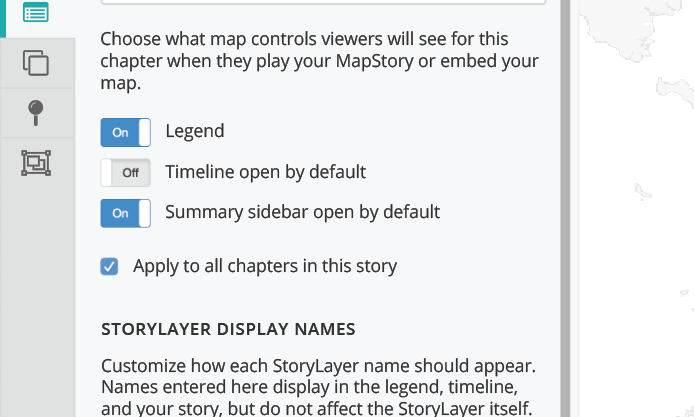
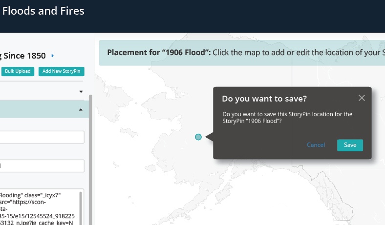
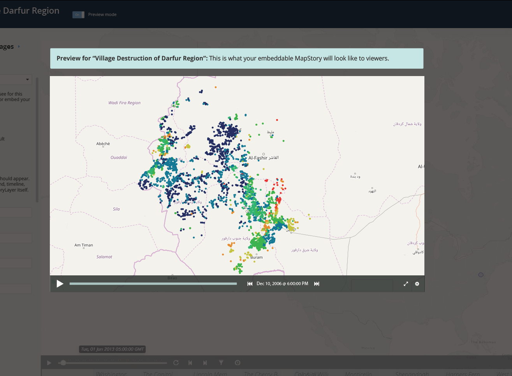
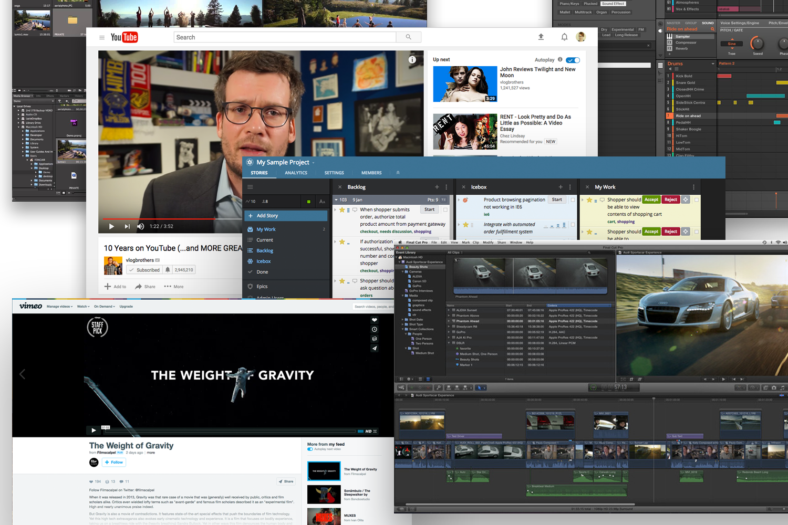
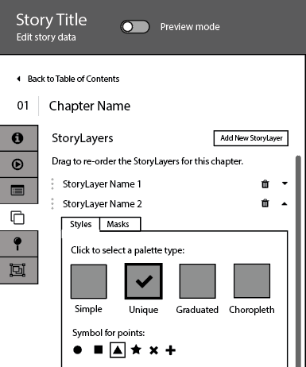
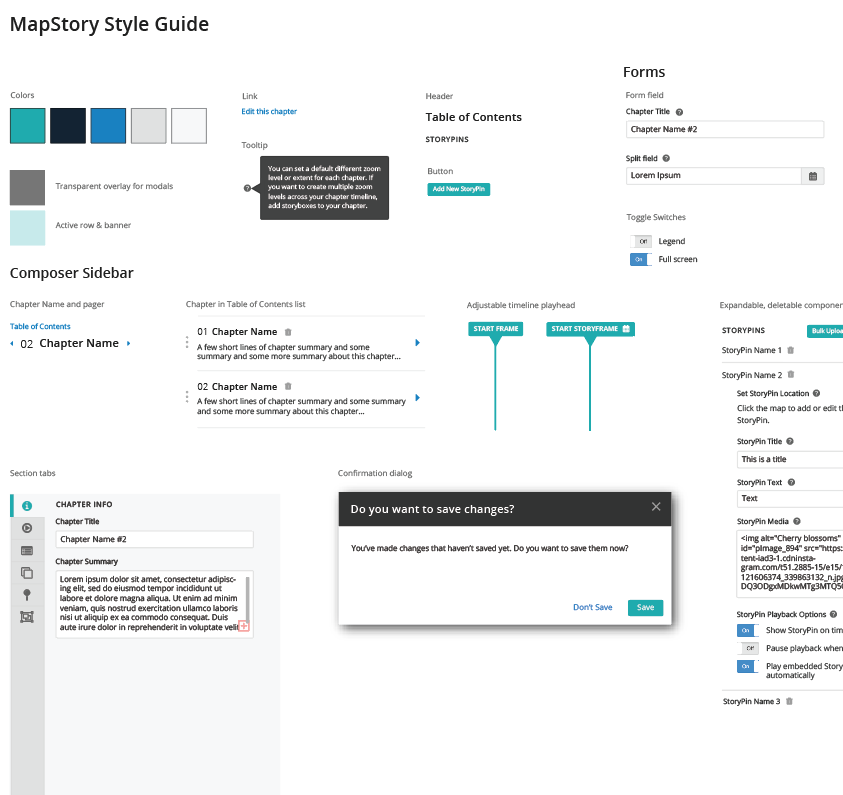

MapStory is a free, open source, editable atlas of world history where storytellers can showcase a nuanced understanding of historical change. With MapStory’s Composer, storytellers can quickly and easily combine spatiotemporal data with narrative elements like images, text, and video. Embeddable MapStories help viewers better understand how our world has evolved geographically over time.
Unlike its competitors, MapStory provides users a platform for telling stories with maps that change over time. Many GIS tools require expensive, complex, multi-platform services to create maps without any means of representing time—a confusing work flow for users that makes telling meaningful stories with geospatial data challenging. MapStory’s web-based, open source approach provides a single, free platform for creating maps, and lets users embed their work anywhere they choose.
At the center of MapStory’s offering is Composer, a web tool for creating MapStories—embeddable, video-like presentations of geospatial data. Despite its adoption by the press, disease control centers, historians, and others, MapStory struggled to present an intuitive Composer workflow to users.
Despite its adoption by the press, disease control centers, historians, and others, MapStory struggled to present an intuitive Composer workflow to users.
My challenge:
As the sole designer on the project, I wore many hats: researcher, UX designer, visual designer, front-end designer, and user acceptance tester.
I employed a user-centered design approach to eliminate pain points across the site. With an initial focus on redesigning Composer from the ground up, I also explored its entry and exit points to identify key areas to target for future work.
Meanwhile, the development team was also working on new Composer features and iterations with development and refactoring slated for the first quarter of 2017. I simultaneously redesigned the existing Composer and designed the new features in the pipeline while working with product management and engineering to begin design implementation.
I simultaneously redesigned the existing Composer and designed the new features in the pipeline.
I partnered with the product owner to understand the existing tools and uncover insights to address user pain points and goals.
I partnered with the product owner to understand the existing tools and uncover insights to address user pain points and goals.
I wrote an interview script and crafted criteria for validating the redesign’s success with users. I shared quantitative and qualitative findings with the team.
I created personas, prototypes, and other design work to share the strategy and vision for the redesign. This helped evangelize ideas, align vision, and drive decision making.
I designed user flows, wireframes, and clickable prototypes. I provided design specs to developers and wrote CSS.
I presented work to gain buy-in from executives, investors, senior stakeholders, and many others throughout the project lifecycle.
Prior to my involvement, MapStory suffered from lack of consistent funding which resulted in piecemeal development, a revolving door of team members, perpetually shifting priorities, and a reactive development process that lacked long-term vision. In its two year history, MapStory had never had a consistent design presence or focus on user experience.
In its two year history, MapStory had never benefited from a consistent design presence or focus on user experience.
Interface design fell to developers by default, and in the rush to get features out the door, the introduction of external libraries became commonplace. Band-aids were applied to band-aids. Features were parachuted in and then forgotten. The result: a patchwork UI with features hiding in nooks and crannies and no discernible task flow. After MapStory gained more funding, making up for lost design time became crucial.
As the newest member of the project and someone without a background in GIS, I needed to get up to speed quickly, demonstrate my value, and provide direction to the team. I got to work exploring the site and I used my fresh perspective to my advantage.
Who are the users of MapStory, and how do their needs differ? How could I reduce the time required to compose a story by simplifying and redesigning the interface? In what ways could I allow users to focus on their content, rather than the composing process?
In what ways could I allow users to focus on their content rather than the composing process?
Could I easily navigate the site, understand the tools provided, and create a MapStory? How could Composer provide flexibility, make workflows easy to understand, and empower users to produce MapStories with rich narratives?
During my exploration of MapStory and interviews with the team, I outlined my understanding of the building blocks Composer provided, the relationships between them, and how they assembled to produce a complete, embeddable MapStory playable by a viewer, such as someone reading the news online. Once I understood the pieces and their conceptual relationships to each other, I was ready to begin reorganizing the Composer for a more intuitive presentation to the user.
I identified key points of friction in the Composer user flow and met with the product owner and engineering team to ask questions about intent. We discussed and defined the vision for an improved Composer interface and a more robust, expanded feature set.
I also interviewed the Content Team, a small group of super users identified by the product owner who were working to produce interesting content on the site, each with a different interest or specialty.
During interviews, many users requested features that already existed but were difficult to find, or confessed that they couldn’t understand all the options presented.
Many users requested features that already existed but were difficult to find, or confessed that they couldn’t understand all the options presented.
Consider videography. It would be absurd to shoot, edit, and produce a film one scene at a time from start to finish. Instead, scenes that share a set are shot together, even if they don’t appear back to back in a film. Similarly, users didn’t come to Composer ready to input all their data in the order it would be seen during playback. Instead, they jump around the interface to put in all the geospatial data at once, add all their descriptive text and titles at the same time, or customize colors and styles applied to each chapter.
User didn’t understand what features were present, and struggled to understand the significance or value of the ones they could find. They felt frustrated and confined by the tool, unsure of how to transform geospatial data into the rich narratives they envisioned.
User didn’t understand what features were present, and struggled to understand the significance or value of the ones they could find. They felt frustrated and confined by the tool, unsure of how to transform geospatial data into the rich narratives they envisioned.
Depending on the user’s browser width and its aspect ratio, map edges in Composer might not match those of the fixed-width embeddable viewer. Users couldn’t anticipate the precise area of the map their viewers would see.
Users struggled to navigate the components of their MapStory. Jumps from high-level structure to gritty detail were impossible since the interface required users to navigate deep trees of breadcrumbs progressively, one step at a time.
The vision for MapStory: to empower users to tell stories by exploring, showcasing, and sharing geospatial data that changes over time. We wanted to focus on providing users a tool that’s easy to use, flexible, and accommodates multiple workflows.
Users come to MapStory excited to share interesting, impactful narratives told through maps, not fiddle endlessly with granular settings and clunky interfaces.
Users come to MapStory excited to share interesting, impactful narratives told through maps, not fiddle endlessly with granular settings and clunky interfaces.
Redesign of the embeddable viewer is slated for late 2017, so Composer’s redesign needs to be flexible enough to accommodate new features that may be introduced to enhance the embeddable viewer when the time comes.
A new, tabbed sidebar provides better context for which part of the story is being edited and allows the user to jump easily between chapters, making it easy to jump from high- to low-level, granular story editing. This also facilitates easy copy and paste between sections with shared content or settings. Easier navigation puts users in control of their own workflow, and doesn’t impose a linear process.
New “apply to all” checkboxes throughout the interface reduce the amount of time necessary to create a story, and increase the impact of a user’s effort in Composer.
Better editing mode indicators, contextual help, and explanatory copy help users discover, understand, and take advantage of features when composing a MapStory. Different types of users with different goals can easily understand which features enhance their composing process. The interface accommodates all user personas as elegantly and flexibly as possible.
Preview mode helps storytellers quickly understand how their MapStory will translate to the embeddable viewer. It’s never been easier for storytellers to understand how audiences will see their work in Composer.
MapStory’s investors and stakeholders wanted to see quick demonstrated progress, despite a desire not to be involved in the discovery process. Balancing a long wish list of features with quick, iterative deliveries of work presented a challenge throughout the course of the project.
As the first and only designer on the project, I provided a structure and framework for producing and showcasing design work ahead of development, which gave the team a clear understanding of what we needed to be built, which in turn helped us to hit project benchmarks on time. To align the development team, product owner, investors, and stakeholders, I shared user insights, key findings, drafts of the design, and progress reports along the way.
Once I secured buy-in across the board for a user-centered design approach, I worked closely with the product owner and engineering teams to facilitate discussion and concretely define milestones so we’d have checkpoints and iterative progress toward the overall vision to share with investors and stakeholders along the way.
Few competitors in web-based mapping tools have features that need to be accommodated in a user-friendly interface such as MapStory does. Though competitors do present interesting interfaces to consider for styling and editing geospatial data, none help users produce a playable map that displays change over time. I needed to find interesting user experiences—both successful and unsuccessful—to draw inspiration for MapStory’s Composer redesign.
I turned to video production and editing software, online video communities, sound engineering software, and other applications with a temporal focus, especially ones that provided granular control and non-linear workflows.
To ensure the organization and workflow provided by the new interface made sense, I produced low-fidelity wireframes to discuss in detail with the development team and product owner.
Facilitating these discussions helped me uncover the hidden features of Composer that were difficult to discover by clicking through the interface. By outlining the current feature set with developers and identifying feature sets where they lacked experience or understanding of intent, I created a shared understanding on the team of our blind spots and areas of Composer that were especially hard to understand or use. Throughout Composer we discovered features that didn’t function the way the team thought they did, or didn’t match the product owner’s intent—often the unintended result of half-finished features due to rotating team members or sudden lack of funding.
After revisions and additional review, the team felt satisfied with the interface and feature set the wireframes communicated. From there, I created high-fidelity versions of the wireframes to explore color, typefaces, and things like hover, active, and error states for interactive elements.
I created clickable prototypes and scheduled informal group review sessions with the Content Team—our group of super users—and walked them through my vision for the redesign. I focused discussion on areas of the design where:
The Content Team also helped guide the team where we felt unqualified to make a decision without user input—things like choosing sensible default settings, or where “apply to all” checkboxes would be useful.
While working on the high-fidelity prototypes, I also built and maintained a style guide that would serve as a skeleton for writing CSS. The style guide also helped in discussions with developers about which elements of Composer would be useful to abstract into reusable Angular components to minimize development effort once underway.
With high-fidelity mock-ups and clickable prototypes validated with users, I led final discussions with the development team and product owner to zero in on areas of the design that would require a high level of effort. To maintain budget and timelines, we created simpler yet elegant alternatives to more ambitious features that could be iterated on in the future.
We created milestones and granular development stories to represent the scope of the first release, the order in which the work must be done, and iterations and touch points along the way. Once defined, I made final revisions to the designs to represent precisely what the team had committed to so that features depicted in mock-ups didn’t show future iterations or implementations not detailed by the stories we had written.
Now, the development team has the most complete set of design mock-ups they have ever worked with, and I’m working closely with front-end developers to implement CSS and bring my designs to life in the browser and ensure that designs are implemented with high attention to detail.
Once the redesign is released, I will write an interview script and conduct user acceptance testing. With feedback and responses to some of the same questions I asked during discovery, I’ll be able to provide quantitative and qualitative metrics to stakeholders and the team (load time, amount of time needed to compose the same MapStory, how confident users feel about what viewers will see based on a change they made, etc.). This will help us evaluate the redesign’s success in solving key problems for users, and determine which areas require more work and creative solutions.
As the project progresses and the work goes live, I’ll be updating this case study to reflect lessons learned and successes or failures along the way.